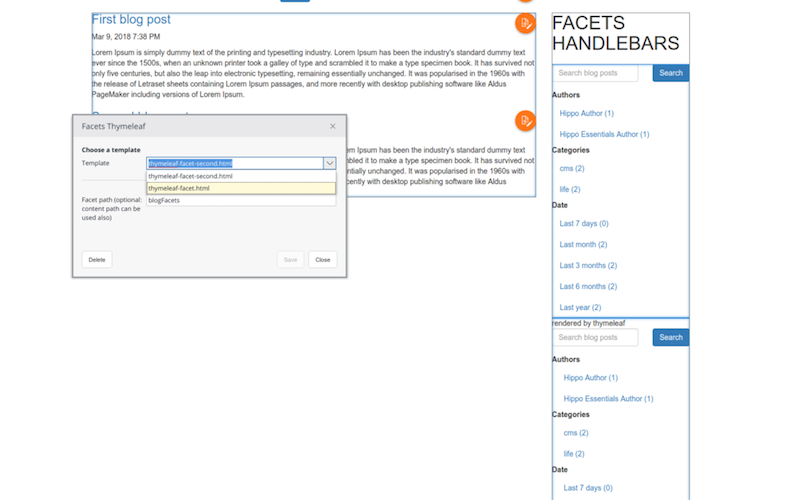

Introduction
This is a community driven project to support various view templating technologies other than FreeMarker in Hippo CMS Delivery tier web application.
Module Overview
This project consists of the following submodules:
- templating-support-core : The core APIs, utilities and base classes which make it easier to implement a specific templating technology specific servlet(s) and other functionalities.
- templating-support-handlebars : View templating support module for Handlebars.java.
- templating-support-thymeleaf : View templating support module for Thymeleaf.
templating-support-core submodule
Core APIs, Utilities and base classes.
Features:
- Common base class: org.onehippo.forge.templating.support.core.servlet.AbstractHstTemplateServlet
- Default JCR Event Listener implementation to invalidate template cache on changes, by invoking #clearTemplateCache() of the specific implemenation servlets.
- Common Helper Classes to support seamless HST-2 integrations.
- TemplatingPropertyRepresentationFactory overriding the defeault org.hippoecm.hst.pagecomposer.jaxrs.api.PropertyRepresentationFactory to allow template switching even between Handlebars or Thymeleaf in the component parameter setting dialog.
templating-support-handlebars submodule
Handlebars view technology supporting servlet and other utilities.
Features:
- Default Handlebars template servlet: org.onehippo.forge.templating.support.handlebars.servlet.HandlebarsHstTemplateServlet, supporting WebfileTemplateLoader (webfile:...), ClassPathTemplateLoader (classpath:...), ServletContextTemplateLoader based on protocol prefixes.
- Helpers for seamless HST-2 integrations.
See Install page for detail on how to use it in your project.
templating-support-thymeleaf submodule
Thymeleaf view technology supporting servlet and other utilities.
Features:
- Default Thymeleaf template servlet: org.onehippo.forge.templating.support.thymeleaf.servlet.ThymeleafHstTemplateServlet, supporting WebfilesTemplateResolver (webfile:...), ClasspathTemplateResolver (classpath:...), ServletTemplateResolver based on protocol prefixes.
- Models and Dialects for seamless HST-2 integrations.
See Install page for detail on how to use it in your project.
Switch Template Support
By default, the Switch Template Support feature in the product supports only FreeMarker templates.
If you want to support the feature for your templates in either Handlebars or Thymeleaf, simply copy the template-support.xml in the demo project into site/src/main/resources/META-INF/hst-assembly/overrides/addon/org/hippoecm/hst/pagecomposer/ folder.
Then you will be able to switch templates in either Handlebars or Thymeleaf:

Demo Application
You can build the module locally first in the project root folder.
And you can build and run the demo project:
$ cd demo
$ mvn clean verify
$ mvn -P cargo.run
Visit http://localhost:8080/site/.
You will see some examples rendered by different templates other than FreeMarker in the page.